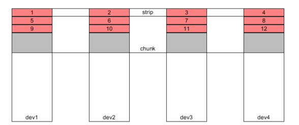

RAID将物理device抽象成上层逻辑chunk，让上层软件可以像访问数组一样访问device。这层封装既能并发的读写device，加快文件的读写速度；也能对device做备份，保证一定数量的device失效后数据仍然可以恢复。
在linux4.4.0中，btrfs_alloc_chunk建立chunk到device的映射，使上层软件看到的存储块不是真实device中的block，而是抽象出来的逻辑数组Chunk
chunk都是以extent_map(em)的形式记录到红黑树fs_info->mapping_tree中。find_next_chunk找到最后一个em.end作为新chunk的逻辑地址，供上层软件访问。
注：
1. 一直这样向后申请chunk的逻辑地址，相对比较方便。但是如果测试case是relocate chunk:即先申请em，再释放原来的em，这样会导致中间会有很多空闲的逻辑地址，但是申请到的em.start却会一直增加直到越界，之后将会再也申请不到chunk的地址
2. inode内部也有一个extent_map，是inode的逻辑地址和chunk地址的映射，映射信息放到em.block_start中；而这里的extent_map是在红黑树mapping_tree中，是chunk和device的映射，映射信息放在em.map.stripes数组中
在__btrfs_alloc_chunk中，首先通过find_free_dev_extent根据RAID类型在每个dev中查找空闲空间(dev_extent),然后将dev_extent通过em.map进行管理，抽象成如下图的Chunk

注：
图中灰色部分是在做RAID_DUP时，在同一个dev上做的备份
chunk包含多个stripe，单个stripe可以做备份(RAID1,RAID10),也可以校验(RAID5,RAID6),也可以都不做(RAID0)
em是对chunk的记录
em.start: chunk的逻辑地址
em.len: chunk的逻辑长度
em.orig_block_len: chunk在单个stripes(单个dev上的整个红色区域或者灰色区域)上的长度
map是对RAID的记录
map.stripes[]: 记录单个dev中红色区域或者灰色区域的设备及偏移
map.num_stripes: RAID中stripes的个数，例如dev1有2个stripes，红色区域+灰色区域
map.stripe_len: strip在dev1上(编号1)的长度
map.type: RAID类型
此时device就被抽象成一个从em.start开始，长度为em.len的chunk数组，但是为了方便chunk空间的分配，__btrfs_alloc_chunk会进一步将chunk抽象成block_group进行使用。
xint btrfs_make_block_group(struct btrfs_trans_handle *trans, struct btrfs_root *root, u64 bytes_used, u64 type, u64 chunk_objectid, u64 chunk_offset, u64 size){ //申请chunk关于盘上数据的修改，将会通过commit_trans落盘(不是通过log_root) btrfs_set_log_full_commit(root->fs_info, trans); //申请block_group，并将chunk的RAID类型和em.start赋给block_group_item cache = btrfs_create_block_group_cache(root, chunk_offset, size); ... ... //将新申请的所有chunk空间通过block_group管理 add_new_free_space(cache, root->fs_info, chunk_offset, chunk_offset + size); ... ... //将block_group加入到红黑树fs_info.block_group_cache_tree中 ret = btrfs_add_block_group_cache(root->fs_info, cache); //将block_group的空间信息添加到对应RAID类型的space_info中 ret = update_space_info(root->fs_info, cache->flags, size, bytes_used, &cache->space_info); ... ... __link_block_group(cache->space_info, cache); //将block_group添加到new_bgs链表中，在btrfs_commit_transaction中会遍历这个链表将管理信息落盘 list_add_tail(&cache->bg_list, &trans->new_bgs); ... ...}
注：在btrfs_commit_transaction时，btrfs_finish_chunk_alloc会将逻辑chunk_item信息和dev_extent申请的信息记录到Btree中，随着trans一起落盘。
btrfs_alloc_chunk将device抽象成chunk的过程中，是将chunk的空间信息封装成free_space添加到block_group中，通过block_group对整个空间进行管理，记录chunk的使用情况。
block_group对chunk中free_space的有两种管理方式：
以红黑树管理free_space(extent_entry)，即以字节为单位申请和释放free_space
以bitmap管理free_space(free_space仍然放在红黑树中)，即以ctl.unit为单位申请和释放free_space
注：bitmap能在一定程度上解决空间碎片的问题，但是extent_entry在查找空间空间时会更快一些，因为bitmap_entry和extent_entry都要搜索红黑树，但是bitmap还要进一步看bimap中是否有连续的空闲空间，extent_entry只需要检查剩余空间是否充足就可以了。
chunk将free_space释放给block_group，用户将用完的free_space释放给block_group，都是通过__btrfs_add_free_space完成。
xxxxxxxxxxint __btrfs_add_free_space(struct btrfs_free_space_ctl *ctl, u64 offset, u64 bytes){ //申请free_space，并初始化 info = kmem_cache_zalloc(btrfs_free_space_cachep, GFP_NOFS); ... ... info->offset = offset; info->bytes = bytes; RB_CLEAR_NODE(&info->offset_index); /* 功能：尝试将其和红黑树左右两个free_space进行合并(以新的free_space为基础合并，左右如果进行合并将会被释放) 函数解析： 1.tree_search_offset会在红黑树中查找offset对应的free_info。所以查找左右info只需要查找free_space的左右两个端点(bitmap和fuzzy没置上) - bitmap_only置上，只会返回bitmap置上，info.offset是查找offset的free_space，如果没有将会返回NULL - bimap_only没置上，会优先返回不带bitmap的free_space - fuzzy没置上，会返回包含找到offset的free_space(info.offset在offset的左边)，否则返回NULL - fuzzy置上，会返回第一个info.end超过查找offet的free_space(info.offset可能在offset的右边) */ if (try_merge_free_space(ctl, info, true)) goto link; /* 功能：将free_space释放给cluster(只检查了cluster_list链表上第一个cluster上的第一个bitmap?)或者block_group ret<0，表示出错，比如申请内存出错 ret=0，表示不用bitmap，需要用extent_entry ret=1，表示free_space已经以bitmap的形式添加到block_group中 函数解析: 1.offset_to_bitmap：将info.offset转换成在bitmap中的offset(从ctl.start开始，大小为BITS_PER_BITMAP * ctl.unit为一个bitmap offset) 2.add_bytes_to_bitmap:将free_space.bitmap中的相应的位置1，表示一个ctl.unit的空间释放 3.add_new_bitmap：将带有bitmap的free_info添加到block_group的红黑树中 - link_free_space--->tree_insert_offset:extent_entry如果和bitmap_entry有相同的offset，extent_entry会在前面 4.在new_bitmap中，会先解锁ctl.tree_lock，然后申请bitmap，然后上锁。解锁的过程中block_group的bitmap可能发生了变化，所以需要调得到again再次看看能不能把free_space添加到新加的bitmap中 */ ret = insert_into_bitmap(ctl, info); ... ... link: /* 功能：为了减小空间碎片，尝试从free_space左右的bitmap中合并空间(和try_merge_free_space类似，只不过先合并bitmap空间，在进行free_space合并) 函数分析： 1.steal_from_bitmap_to_end：查看包含free_space.end的entry，将这个entry的和free_space连在一起的空间空间进行合并 steal_from_bitmap_to_front向前合并bitmap */ steal_from_bitmap(ctl, info, true); //将free_space链接到block_group的红黑树中 ret = link_free_space(ctl, info); ... ...}Btrfs在文件扩展或者COW时，都是以btrfs_alloc_tree_block-->btrfs_reserve_extent-->find_free_extent向相应的block_group申请硬盘空间，用于存储Btree的meta_data和文件数据extent_buffer。
static noinline int find_free_extent(struct btrfs_root *orig_root, u64 num_bytes, u64 empty_size, u64 hint_byte, struct btrfs_key *ins, u64 flags, int delalloc){ /* 之前的主要内容： 1.__find_space_info查找raid flag所在的space_info 2.fetch_cluster_info查找使用的cluster - cluster会向block_group申请free_space用于tree_block的分配 - cluster在space_info没有充足的空间，或者cluster.fragmented(空间充足，但是空间碎片较多，没办法申请到连续规定的空间)时不会使用，直接向block_group申请 3.如果search_start有着很明显的规律(相当于cache，block_group很有可能cached，不是read_only，flags可能满足要求)，再检查block_group的RAID类型之后，从这个cached_block_group开始。如果这个block_group没有充足空间，再在下面的space_info中查找 */ search: ... ... //遍历space_info的对应RAID block_group list_for_each_entry(block_group, &space_info->block_groups[index], list) { ... ... //检查block_group和要求flags是否符合，如果不行继续遍历下一个block_group if (!block_group_bits(block_group, flags)) { ... ... have_block_group://有可能是由search_start确定的block_group，也有可能是space_info下的block_group //将block_group的free_space管理信息从硬盘加载到内存，这里可能只是设置work，没真正加载 cached = block_group_cache_done(block_group); if (unlikely(!cached)) { have_caching_bg = true; ret = cache_block_group(block_group, 0); BUG_ON(ret < 0); ret = 0; } ... ... //如果cluster有充足的空间，并且没有fragmented，优先使用cluster if (last_ptr && use_cluster) { ... ... /*检查cluster 1.如果cluster没有block_group，跳到refill_cluster为cluster填充free_space 2.如果cluster.block_group不满足用户的flags要求，跳到release_cluster将cluster中的free_space释放，并且用找到的block_group中的free_space填充cluster */ ... ... /* 功能：遍历cluster free_space的红黑树，从bitmap或者entry_exten中找到连续满足需求的空间 - 返回0，表示没找到 - 返回0ffset，表示找到的空间的chunk逻辑地址 函数分析： 1.如果没找到，max_extent_size记录cluster中最大的free_space大小 2.btrfs_alloc_from_bitmap--->search_bitmap - for_alloc置上，表示要真正的申请空间，而不是查看bitmap中最大的连续空间是多少 - bytes_to_bits：将要找的字节长度转换成空闲bitmap的长度 - 返回0，找到要求的大小(大小可能大于需要的，但是在btrfs_alloc_from_bitmap只申请需要的大小) 返回-1，表示没找到 3.cluster->window_start记录此次申请的offset(因为是从window_start开始搜的，直接加bytes就可以) 4.如果是extent_entry,并且充足的空间，直接更新entry.offet和entry.bytes */ offset = btrfs_alloc_from_cluster(used_block_group, last_ptr, num_bytes, used_block_group->key.objectid, &max_extent_size); release_cluster://如果找到直接跳到checks,没找到还要将cluster中的free_space释放，向遍历的block_group申请新的free_space ... ... /* 功能：将cluster中的free_space返还给cluster.block_group 函数分析：btrfs_return_cluster_to_free_space--->__btrfs_return_cluster_to_free_space 1.如果是extent_entry，和__btrfs_add_free_space一样，先try_merge_free_space，然后steal_from_bitmap减少空间碎片 2.如果是bitmap_entry，直接通过tree_insert_offset插入红黑树 */ btrfs_return_cluster_to_free_space(NULL, last_ptr); ... ... refill_cluster://重新填充cluster.root中的free_space ... ... /* 功能：在遍历的block_group中查找extent_entry和bitmap_entry中找到大小合适的free_space填充cluster - 如果返回0，表示找到满足要求的free_space，再次通过btrfs_alloc_from_cluster从cluster申请 - 如果没找到： - wait_block_group_cache_progress等待block_group缓存到内存 - 实在找不到，btrfs_return_cluster_to_free_space将free_space返还block_group 函数分析： 1.setup_cluster_no_bitmap查找要求大小(会根据用户的需求重新定义min_bytes，free_space的max_extent会大于用户的bytes需求)的free_space填充到cluster中 - 会将遍历到的bitmap_entry记录到链表bitmaps中 - 会更新cluster->window_start为first.offset - 如果first~last之间max_extent不满足用户的bytes需求，返回ENOSPC，如果找到需要的空间返回0 - 会将first~last大于min_start填充到cluster.root 2.如果在extent_entry中没找到需要空间，通过setup_cluster_bitmap在收集的bitmaps链表中查找空闲空间 - 会将包含想要offset的bitmap_entry包含到bitmaps链表中 - btrfs_bitmap_cluster会查找bitmaps链表中的每一个bitmap_entry - 把满足min_bits空间大小的bitmap_entry加到cluster中，直到总空间(total_found)和需求空间(cluster->max_size)满足要求。如果此条件达不到返回ENOSPC，否则返回0 - 满足要求后会将第一个满足要求的bitmap.offset赋给cluster->window_start */ ret = btrfs_find_space_cluster(root, block_group, last_ptr, search_start, num_bytes, aligned_cluster); ... ... } unclustered_alloc://如果cluster.fragmented,直接在block_group中申请 ... ... /* 功能：查询block_group的free_space找到长度超过num_bytes+empty_size空间 函数分析： 1.find_free_space：查找block_group长度和对齐满足要求的free_space。 2.申请需要的空间，将剩余的空间重新加入到block_group中(包括前面没对齐的free_space) */ offset = btrfs_find_space_for_alloc(block_group, search_start, num_bytes, empty_size, &max_extent_size); checks://检查查找到空闲空间是否满足要求 ... ... //检查通过之后返回查找的信息 ins->objectid = search_start; ins->offset = num_bytes; ... ... } ... ... /* 功能：如果之前的步骤还是找不空间，需要有4个状态机，每个状态机都会做一次full_search(index~BTRFS_NR_RAID_TYPES) 状态机： LOOP_CACHING_NOWAIT：这是最开始查找的状态机，在这个状态会激活所有block_group缓存到内存 LOOP_CACHING_WAIT：如果发现有缓存block_group操作，或者full_search没做完，会在这个状态等待所有的block_group缓存到内存 LOOP_ALLOC_CHUNK：如果所有的block_group都缓存到内存还是没有找到空闲空间，需要通过这个状态进行do_chunk_alloc LOOP_NO_EMPTY_SIZE：如果之前还是没有查找到，这个状态会降低需求(清空empty_size和empty_cluster)再去查找，如果还没查找到，返回ENOSPC */}